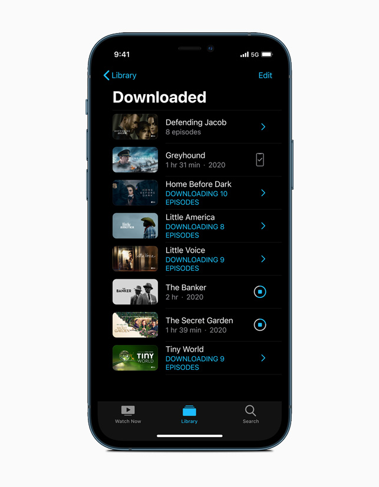

Apple представила iPhone 12 Pro и iPhone 12 Pro Max
Процессор Bionic A14, Изменённый корпус с защитой Кирамический щит, Сканер пространства LiDAR, Переустроенная система камер, Увеличенный 6.7 дюймовый экран Super Retina XDR, Поддержка сети 5-го поколения
Высокая активность звучания в использовании наушников при длительном прослушивании, приводит к ухудшению слуховой деятельности и снижению чувствительности. Во избежание повреждений и проявлений частичной потери слышимости, система iOS1 позволяет сократить интервал допустимых частот до безопасного уровня.
Для выполнения параметра, используйте следующее:
Коснитесь приложения Настройки.
Перейдите в раздел Звуки, тактильные сигналы.
Воспользуйтесь Приглушение громких звуков.
Переведите показатель переключения в действие и укажите соответствующий параметр допустимого ограничения.

Перейдите в раздел Звуки, тактильные сигналы.
Воспользуйтесь Приглушение громких звуков.
Переведите показатель переключения в действие и укажите соответствующий параметр допустимого ограничения.
Безопасное воздействие суточной звуковой активности в течении 5 часов 30-и минут беспрерывного прослушивания, является высоким показателем звукового воздействия.
Относительное воздействие звуков
Условность
Воздействие
Шёпот
30 ― 39 дБ
Библиотека
40 ― 49 дБ
Умеренный дождь
50 ― 59 дБ
Разговорная речь
60 ― 69 дБ
Плач младенца
70 ― 79 дБ Предел воздействия (75 дБ): 127 ч. / 7 дн.
Оживлённый уличный проспект
80 ― 89 дБ Предел воздействия (80 дБ): 40 ч. / 7 дн.
Пересекающий поезд
90 ― 99 дБ Предел воздействия (90 дБ): 4 ч. / 7 дн.
120 ― 130 дБ Предел воздействия (120 дБ): 14 сек. / 7 дн.
Допустимые показатели
Безопасное воздействие суточной звуковой активности в течении 5 часов 30‐и минут беспрерывного прослушивания, является высоким показателем звукового воздействия.
Безопасное воздействие суточной звуковой активности в течении 5 часов 30‐и минут беспрерывного прослушивания, составляет 80 децибел. Однако, пересечение порога значения в 90 децибел, является высоким показателем звукового воздействия.
Безопасное воздействие суточной звуковой. Действущая активности в течении 5 часов 30‐и минут беспрерывного прослушивания, составляет 80 децибел. Однако, пересечение порога значения в 90 децибел, является высоким показателем звукового воздействия.
Допустимые показатели
Безопасное воздействие суточной звуковой активности в течении 5 часов 30‐и минут беспрерывного прослушивания, является высоким показателем звукового воздействия.
Безопасное воздействие суточной звуковой активности в течении 5 часов 30‐и минут беспрерывного прослушивания, составляет 80 децибел. Однако, пересечение порога значения в 90 децибел, является высоким показателем звукового воздействия.
Безопасное воздействие суточной звуковой. Действущая активности в течении 5 часов 30‐и минут беспрерывного прослушивания, составляет 80 децибел. Однако, пересечение порога значения в 90 децибел, является высоким показателем звукового воздействия.
Событие
Безопасное воздействие суточной звуковой активности в течении 5 часов 30‐и минут беспрерывного прослушивания, составляет 80 децибе́л. Однако, пересечение порога значения в 90 децибел, является высоким показателем звукового воздействия показателем звукового воздействия.
Безопасное воздействие суточной звуковой. Действущая активности в течении 5 часов 30‐и минут беспрерывного прослушивания, составляет 80 децибел. Однако, пересечение порога значения в 90 децибел, является высоким показателем звукового воздействия.
Безопасное воздействие суточной звуковой. Действущая активности в течении 5 часов 30‐и минут беспрерывного прослушивания, составляет 80 децибел. Однако, пересечение порога значения в 90 децибел, является высоким показателем звукового воздействия.
Создайте календарную метку события для предварительного оповещения. Подробнее…
Декларация
Безопасное воздействие суточной звуковой активности в течении 5 часов 30‐и минут беспрерывного прослушивания, составляет 80 децибел. Однако, пересечение порога значения в 90 децибел, является высоким показателем звукового воздействия.
Безопасное активности в течении 5 часов 30‐и минут беспрерывного прослушивания, составляет 80 децибел. Однако, пересечение порога значения в 90 децибел, является высоким показателем звукового воздействия.
Истенный тон действущая активности в течении 5 часов 30‐и минут беспрерывного прослушивания, составляет 80 децибел. Однако, пересечение порога значения в 90 децибел, является высоким показателем звукового воздействия.
Версии ПО 14.0 либо позднее. Под управлением iOS, iPadOS.
Подробности
Разработчики данного приложения не несут ответственность вследствие нарушения возрастного предела. Получить дополнительную информацию, возможно в разделе. Разработчики данного приложения не несут ответственность вследствие нарушения возрастного предела. Получить дополнительную информацию, возможно в разделе. Разработчики данного приложения не несут ответственность вследствие нарушения возрастного предела. Получить дополнительную информацию, возможно в разделе.
 Настройки.
Настройки.